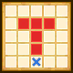

| Lv: | 140 |
|---|---|
| HP: | |
| MP: | |
| ATK: | |
| DEF: | |
| AGL: | |
| WIS: | |
| Move: | |
| Weight: | 60 |
| Weaknesses: |  |
 |
/ |  |
 |
|---|---|---|---|---|---|
| Resistances: |  |
 |
/ |  |
 |
| Immunities: |  |
| Family: |  |
Role: |  |
Element: |  |
|---|
Note: All perks/abilities denoted with an * are using unofficial translations
| Abilities | ||||||
|---|---|---|---|---|---|---|
| Level | Type | Name | MP | Element | Range | Description |
| 1 |  |
Groom Up* グルーミング |
32 |  |
 Self |
Heals a major amount of the user's HP and raises damage dealt for 3 turns |
| 33 |  |
Black Mist* ブラックミスト |
116 |  |
 T |
Deals major Zam-type breath damage (270 base potency) to all enemies in area of effect, often puts to sleep and often lowers Self HP Healing Effects for 3 turns |
| 54 |  |
Galeforce Boulder Toss* 烈風岩石おとし |
115 |  |
 1-3 |
Deals major Woosh-type martial damage (263 base potency) to all enemies in area of effect, occasionally lowers Martial Res for 3 turns |
| 82 |  |
Monster Pile-On | 88 | |
 Front |
Deals moderate martial damage (88 base potency) to random enemies in area of effect 4 times |
| Base Perks | ||
|---|---|---|
| Level | Name | Description |
| 1 | Max HP +30 | Raises max HP by 30 |
| 1 | AGL +20 | Raises max AGL by 20 |
| 1 | Wild Side | Battle start, action start, or when revived: Nullifies and removes some status ailments, reduces damage taken by 20%, and raises evasion rate by 60% if the user's HP is 70% or over When using an ability other than a Coup de Grâce: Activates ability or Fight 2 times in succession if the user's HP is 70% or over This perk can be triggered by non-damage dealing abilities |
| 110, 120, 130, 140 | Galeforce Boulder Toss* potency +2% | Raises Galeforce Boulder Toss* potency by 2% |
| 110, 120, 130, 140 | Monster Pile-On potency +2% | Raises Monster Pile-On potency by 2% |
| Awakening Perks | ||
|---|---|---|
| Awakening | Name | Description |
| 1 | Brimming Instincts* みなぎる本能 |
Battle start: Raises AGL for 3 turns Action start on odd turns until turn 10: Raises DEF, AGL, and damage dealt for 3 turns |
| 2 | Bang Res +25 | Raises Bang resistance by 25 |
| 3 | Vital Heal* バイタルヒール |
Heals 50% of max HP when the user's HP drops to 70% or less, 1 time per battle This perk can be triggered when the attack is from an ally |
| 3, 5 | Galeforce Boulder Toss* potency +5% | Raises Galeforce Boulder Toss* potency by 5% |
| 3, 5 | Monster Pile-On potency +5% | Raises Monster Pile-On potency by 5% |
| 4 | Zap Res +25 | Raises Zap resistance by 25 |
| 5 | Friendly Monster's Blessing* はぐれモンスターの祝福 |
Action start: Heals 15% of max HP |
| 1, 2, 3, 4, 5 | Stats Up | Raises HP, MP, ATK, DEF, WIS and AGL by 5% |